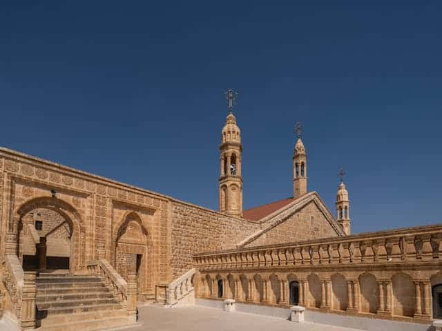
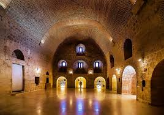

İnancın ve taşın bir araya geldiği, dünyanın yaşayan en eski Süryani manastırı
Mor Gabriel Manastırı, MS 397 yılında inşa edilmiş olup dünyanın hâlâ aktif olan en eski Hristiyan manastırlarından biridir. Mardin'in Midyat ilçesine bağlı Eğlence köyü yakınlarında yer almaktadır.
Süryani Ortodoks Kilisesi'ne bağlı olan manastır, bugün hâlâ din adamları ve keşişler tarafından aktif olarak kullanılmaktadır. Dünya genelinden binlerce turist ve hac ziyaretçisi ağırlamaktadır.

Manastırın inşa edildiği yıl
Kesintisiz faaliyette olduğu süre
Manastırda yaşayan topluluk
2021 yılında UNESCO Dünya Mİras Geçici Listesi'ne dahil edilmiştir
